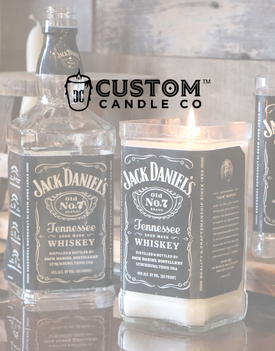
Custom Candle Co
- Website Description: Custom Candle Co. transforms used liquor bottles into elegant, scented candles. Created on Shopify, my tasks include adding products and updating content as needed.
- Status: Still managing
- Project Timeline: Less than an hour per task
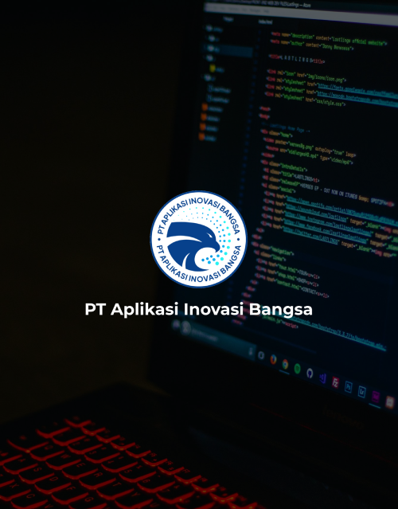
Aplikasi Inovasi Bangsa
- Website Description: Specializing in creating cutting-edge software solutions that drive innovation and efficiency. Built on Oxygen Builder, it took me only a day to complete.
- Status: Finished
- Project Timeline: 1 day
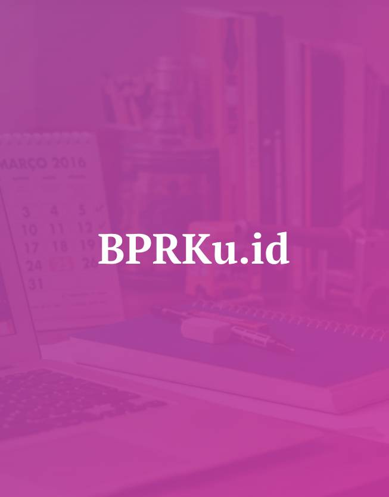
BPRKu.id
- Website Description: A business profile website for BPR Digital and Online Banking System, built from start to finish on Oxygen Builder.
- Status: Finished
- Project Timeline: Approx. 3 days
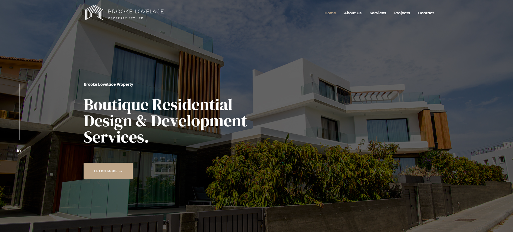
Brooke Lovelace
- Website Description: Boutique residential design and development services website. I created the site from start to finish using a premium theme.
- Status: Finished
- Project Timeline: Approx. 2 weeks
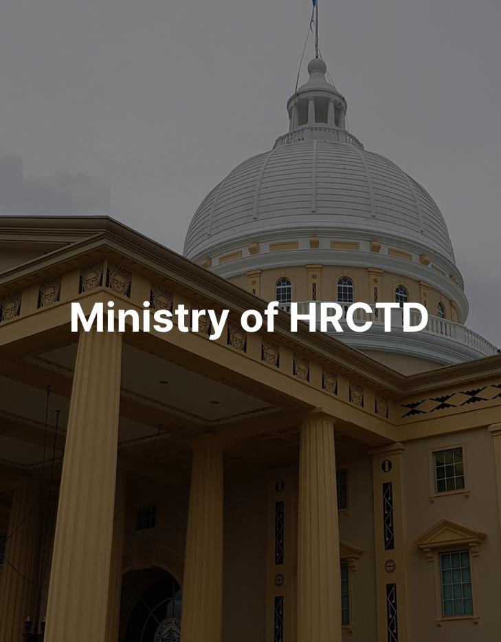
Ministry of HRCTD
- Website Description: Official website for the Ministry of Human Resources, Culture, Tourism, and Development of the Republic of Palau. I created several pages and content, developed the blog template, and handled various other tasks.
- Status: Finished, still managing
- Project Timeline: Approx. 1-2 days per task
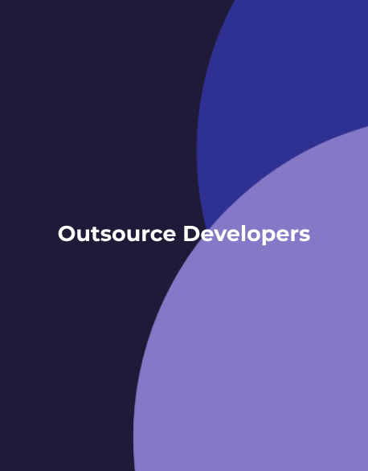
Outsource Developers
- Website Description: A web development outsourcing company website. I built the site by implementing the provided design.
- Status: On progress
- Project Timeline: TBA

Salty Folk
- Website Description: A website showcasing coastal experiences, community events, and educational initiatives in Perth, Australia. Built from start to finish using a provided design.
- Status: Finished
- Project Timeline: Less than a week
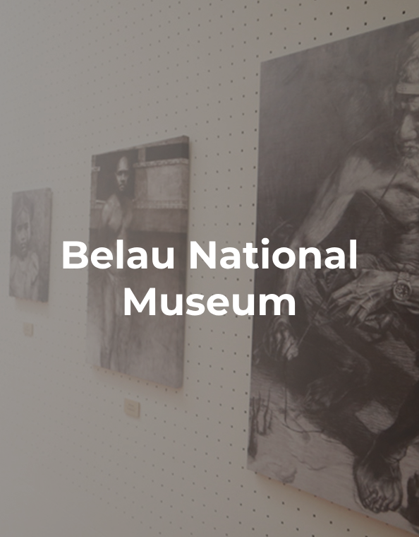
Belau National Museum Palau
- Website Description: A website for the Belau National Museum, featuring showcases, event scheduling, and visitor information. Built from start to finish on Oxygen Builder using a provided design.
- Status: On progress, currently offline
- Project Timeline: Approx. a week
Dedicated IT
- Website Description: An outsourcing website specializing in web development, offering developers to oversee and manage client project requests. The design closely resembles Outsource Developers, with a few unique enhancements.
- Status: Finished, still managing
- Project Timeline: Less than a week
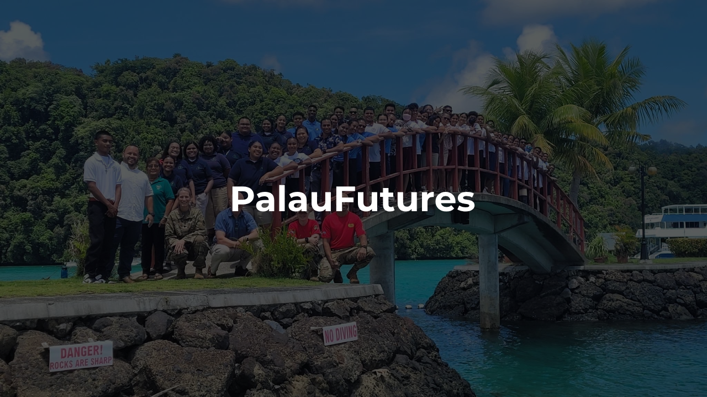
Palau Futures
- Website Description: A website for all Palauans to access information on higher educational opportunities in the United States. It was originally built using Google Sites. The client wanted to transition to WordPress, so I recreated it with the existing design using Oxygen Builder.
- Status: Finished
- Project Timeline: Less than a week
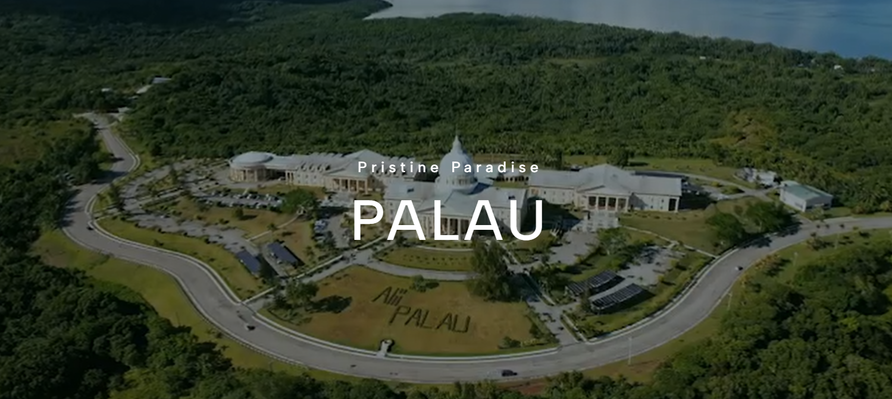
Pristine Paradise Palau
- Website Description: Palau Visitors Authority Website, which contains a variety of information about Palau's tourist attractions, culture and more. I created many pages, blog templates, custom post type, archive pages, and many else. It also involves numerous custom javascript code.
- Status: Finished, still managing
- Project Timeline: Less than a day per task
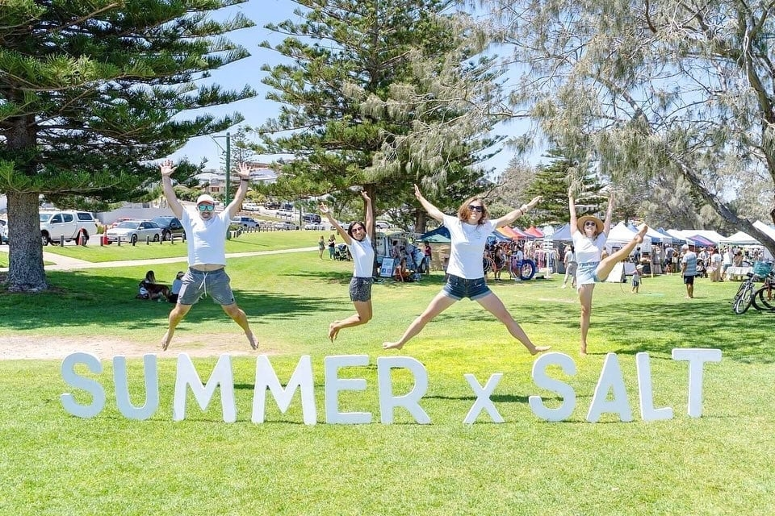
Summerxsalt
- Website Description: An award-winning website for Perth’s beachside markets. I created numerous pages and content using WPBakery, incorporating JavaScript code for added functionality.
- Status: Finished
- Project Timeline: Less than a month
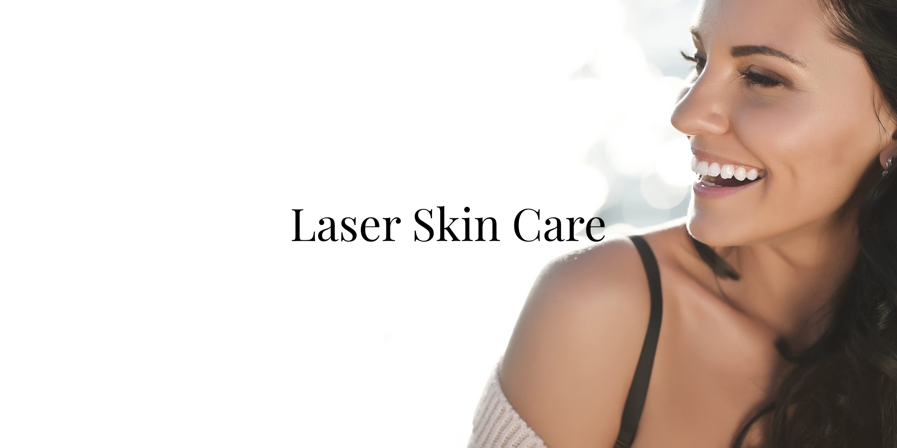
Laser Skin Care
- Website Description: A medical cosmetic and laser clinic website based in Perth, Australia. I created numerous pages and content based on the provided design.
- Status: Finished, rarely managing
- Project Timeline: Less than an hour per task
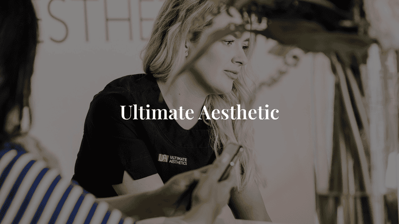
Ultimate Aesthetic
- Website Description: A website for Perth’s leading cosmetic clinic, specializing in non-surgical cosmetic procedures, advanced dermal therapy, and skin and beauty treatments. Created using WPBakery, I added numerous pages and content.
- Status: Finished, rarely managing
- Project Timeline: Less that an hour per task
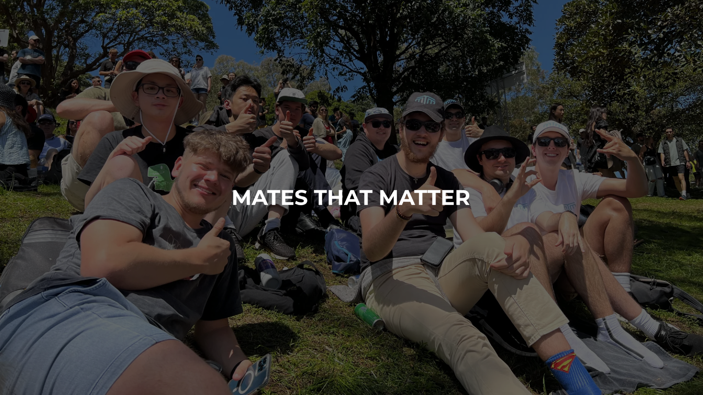
Mates That Matter
- Website Description: A website for Sydney’s leading hidden disability social organization. The design has been updated, and I implemented the original design on the site, which can be viewed on Archive.org (click on Original Design).
- Status: Finished
- Project Timeline: Less than two weeks
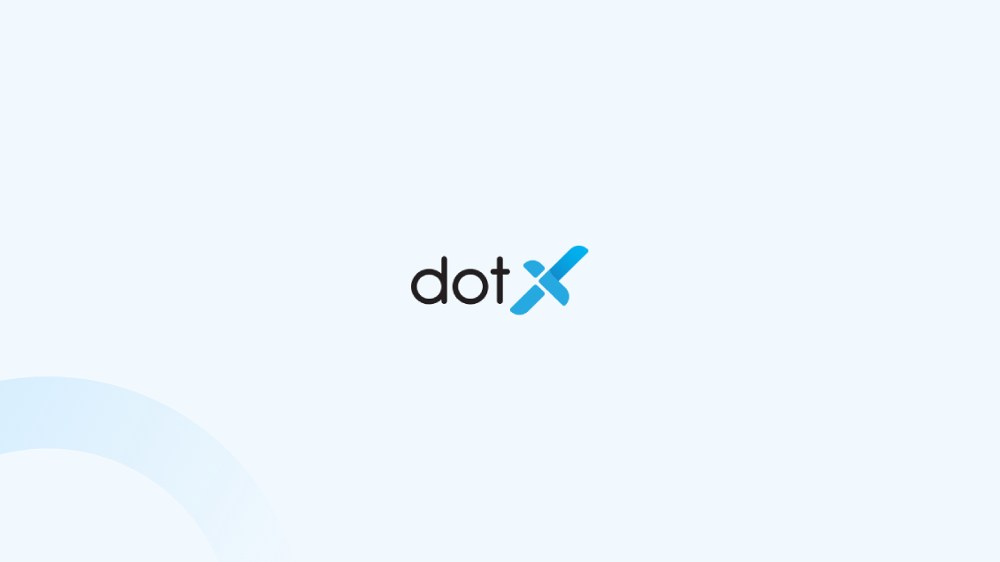
DotX
- Website Description: A website providing information about the Dotx mobile application, a Saving and Loan Union app. I created several pages and content using Oxygen Builder.
- Status: Finished, still managing
- Project Timeline: Less than two hours per task
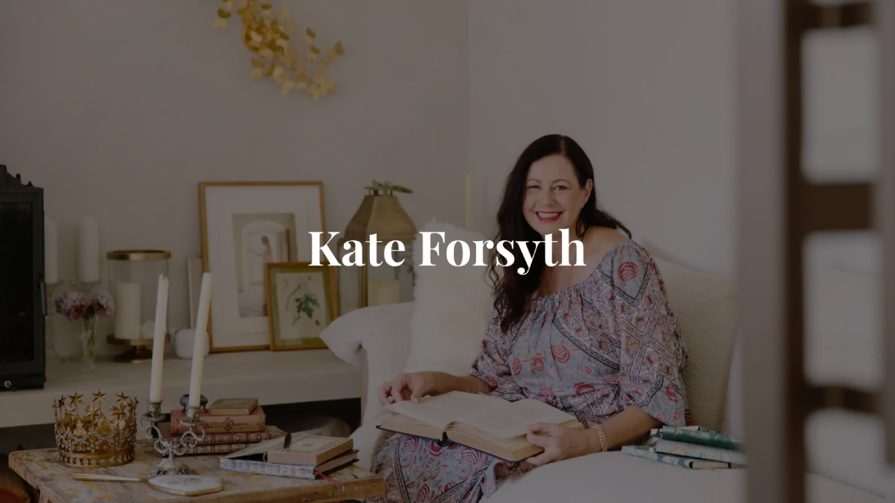
Kate Forsyth
- Website Description: A biography website for the famous Australian writer, Kate Forsyth. I created several pages and content using Oxygen Builder.
- Status: Finished
- Project Timeline: Less than a week
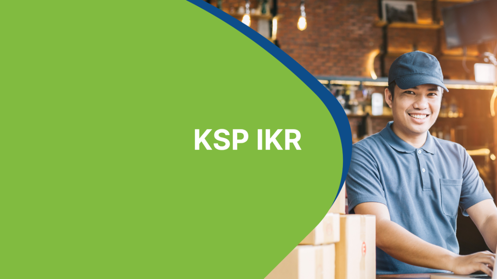
KSP IKR
- Website Description: A website containing information about KSP IKR, a National Union Primary specializing in Savings and Loans. I added content and occasionally created new pages for the site.
- Status: Finished, still managing
- Project Timeline: Less than a hour per task
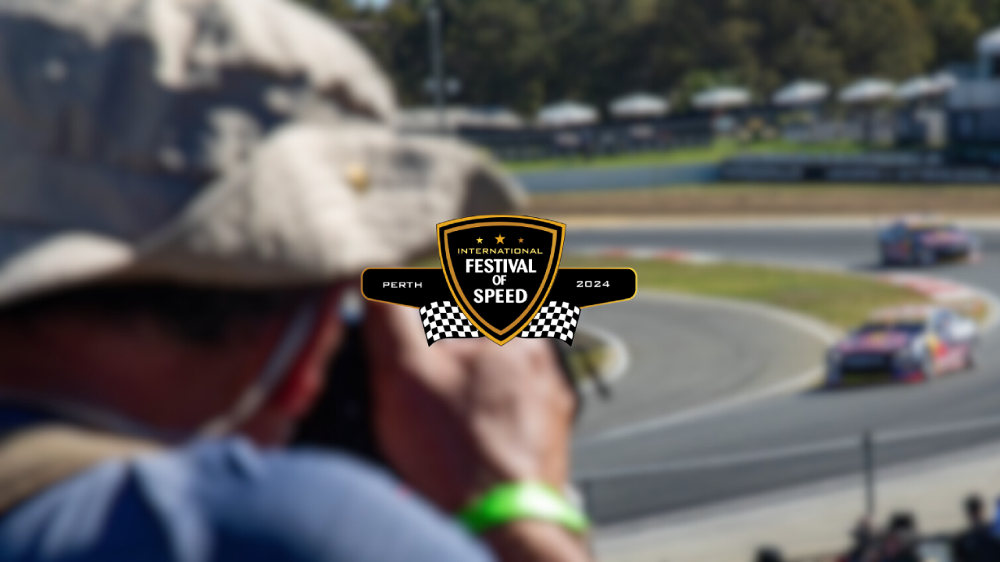
Speedfest
- Website Description: An official website for the Festival of Speed event based in Perth, Australia. I created the page layout and added content to the site.
- Status: Finished
- Project Timeline: Less than a week
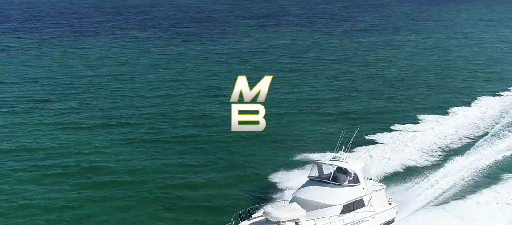
Martin Box Marine
- Website Description: A boat dealership website based in Western Australia. I implemented the designs on several pages, and the site is still in progress to go live.
- Status: On progress to implement a new design
- Project Timeline: Less than a week
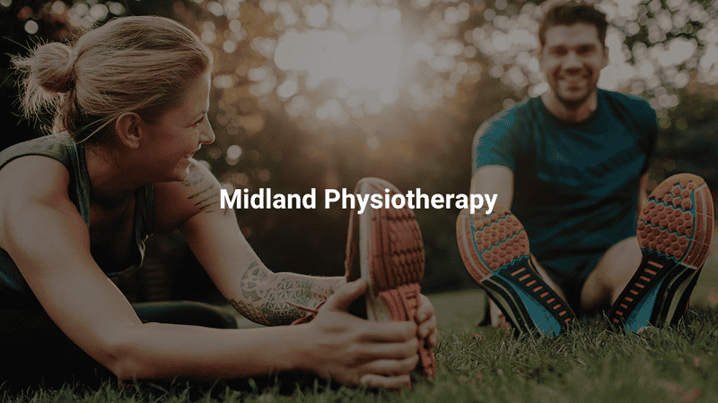
Midland Physio
- Website Description: A physiotherapy and allied health care services website based in Western Australia. I added content and created several pages for the site.
- Status: Finished
- Project Timeline: Less than a month
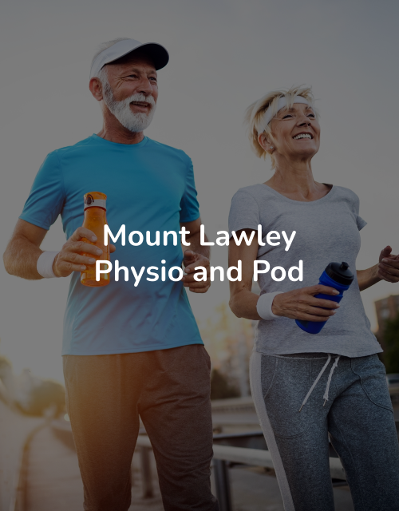
Mount Lawley Physio and Pod
- Website Description: A website specializing in Physiotherapy, Podiatry, and Massage services based in Western Australia. I created the site from start to finish by implementing the provided design.
- Status: Finished
- Project Timeline: Less than two weeks
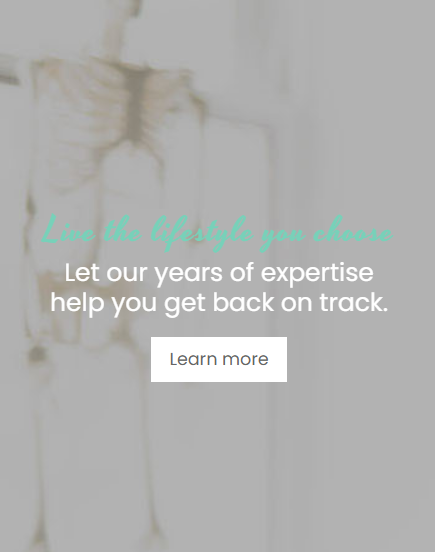
Mundaring Hills Physio
- Website Description: A website providing information about physiotherapy services and the best clinical management in Mundaring, Western Australia. I created several pages and added content to the site.
- Status: Finished
- Project Timeline: Less than two weeks
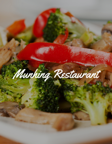
Munhing Restaurant
- Website Description: A Chinese restaurant website where customers can place orders directly through the site. I created most of the pages and content, including the product menu.
- Status: Finished, still managing
- Project Timeline: Less than two weeks (approx. an hour per tasks)
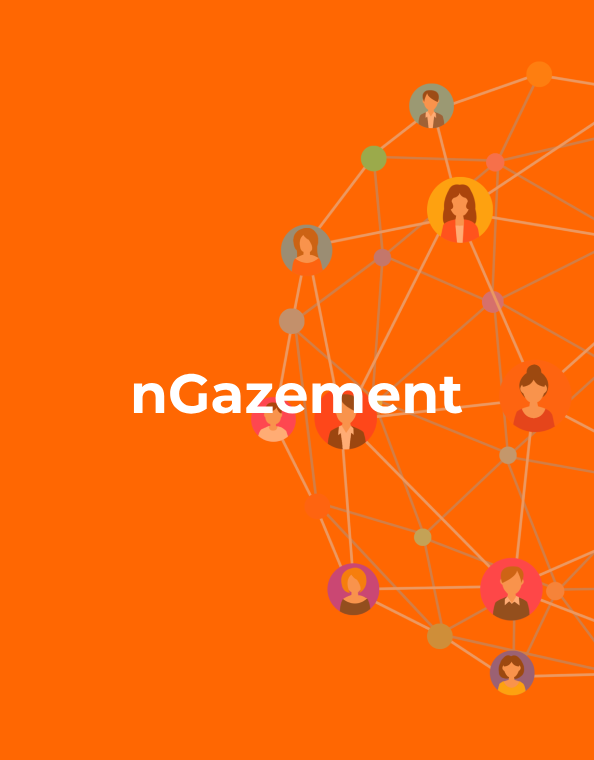
Ngazement
- Website Description: A website providing information about an All-In-One, Customizable App Platform to engage with your community. I created several pages and added content to the site.
- Status: Finished
- Project Timeline: Less than a month
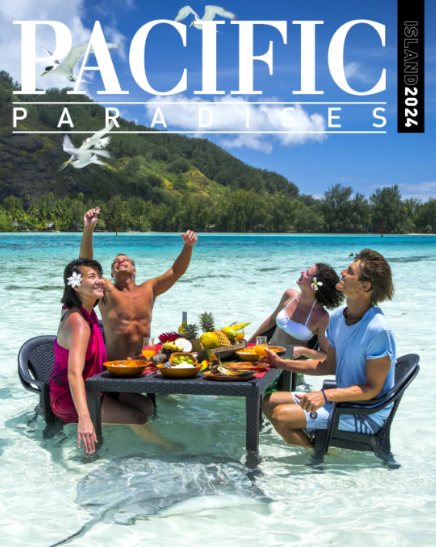
Paradises
- Website Description: A website offering a comprehensive guide to all things travel – from avoiding pitfalls to advice and valuable cultural insights about your desired destination. I added numerous content pieces and made edits to various parts of the page. Additionally, I designed and created the proposal page, which they used as an email template.
- Status: Finished
- Project Timeline: Less than a month
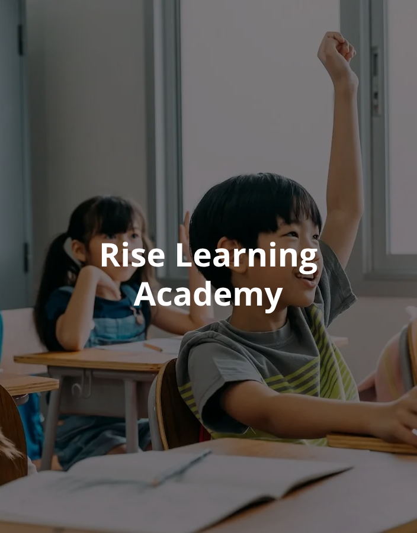
Rise Learning
- Website Description: A website for Rise Learning Academy, featuring programs, registrations, and other information. I created several pages and added content to the site.
- Status: Finished
- Project Timeline: Less than three days
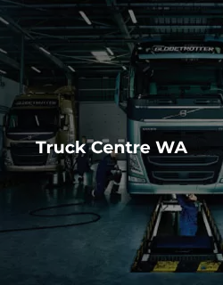
TCWA
- Website Description: A website for truck dealers based in Western Australia. I created and edited several pages, and added content to the site.
- Status: Finished
- Project Timeline: Less than a week